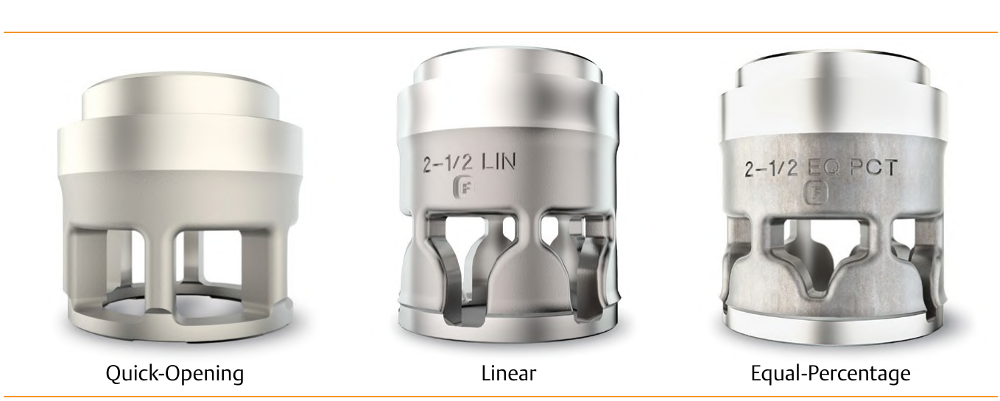
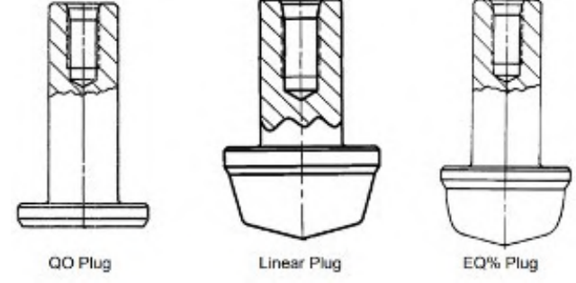

Cage-Guided vs. Plug-Characterized
Cage-Guided

Characteristic lives in the cage window; plug and seat ring stay common parts. The cage swaps in the field to re-characterize the valve.
Plug-Characterized (Non-Cage)

Characteristic is ground into the plug contour itself. Changing it means specifying a new plug, not a field swap.
After Control Valve Handbook, 6th ed., Figs. 3.37 & 3.39 — used directly. Component Index: cvh-cmp-characterized-cages-globe, cvh-cmp-plug-contour-flow-characterization.